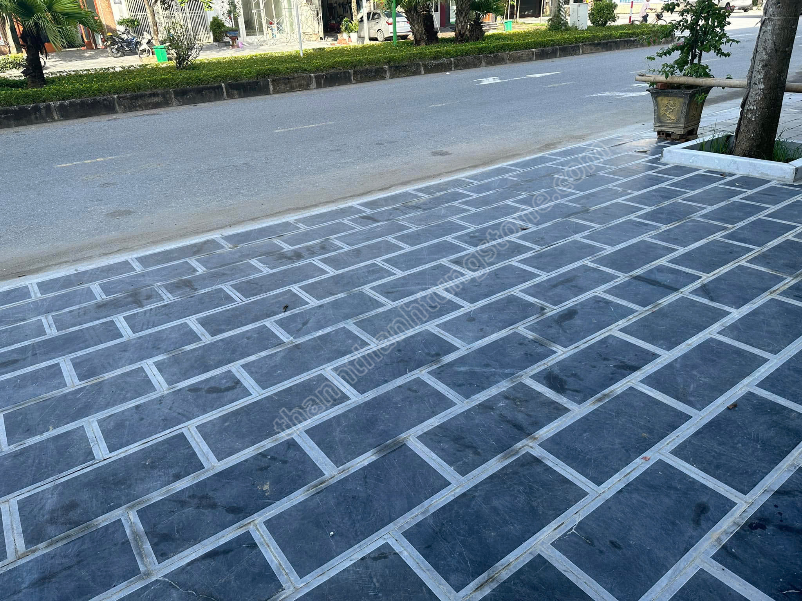
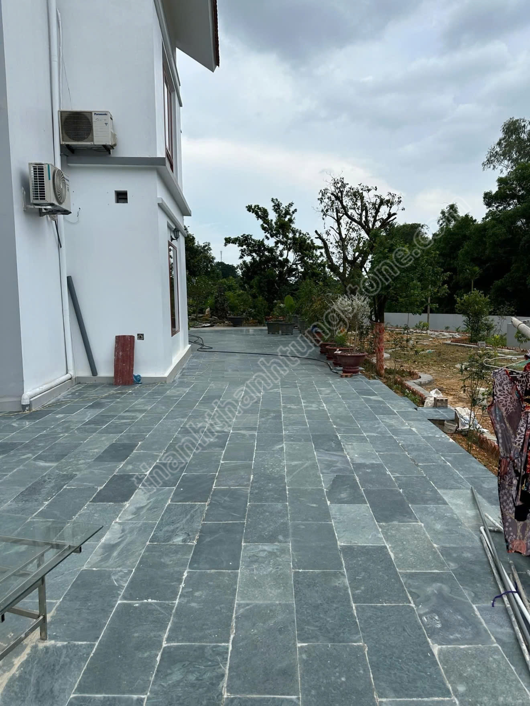
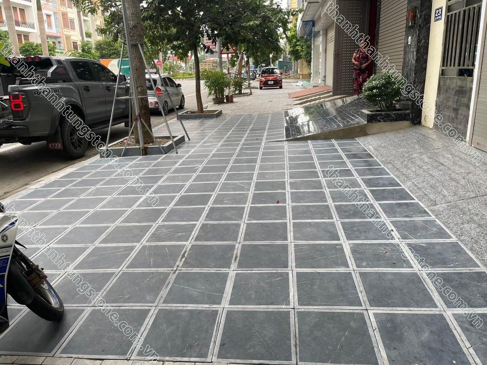
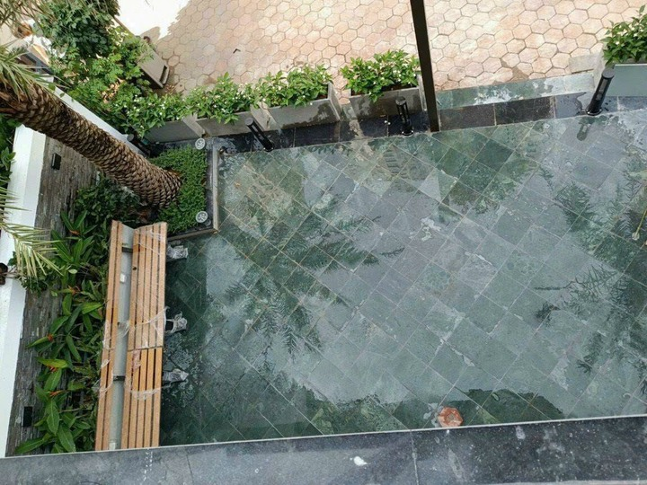
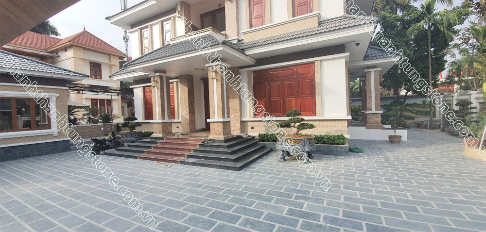
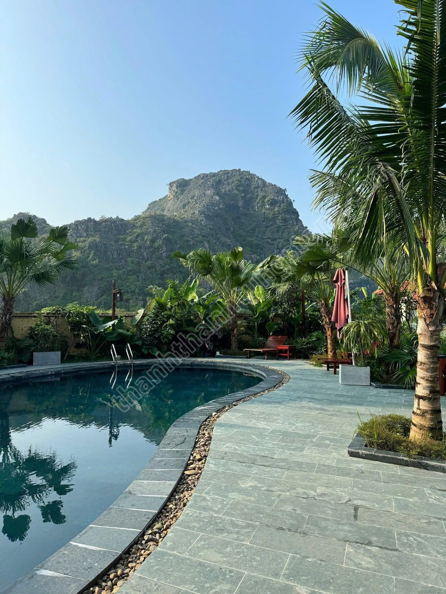
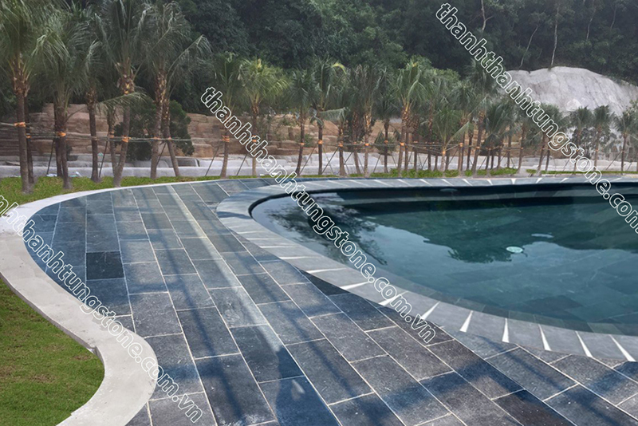

So Sánh Đá Xanh Đen Và Đá Xanh Rêu Thanh Hóa – Nên Chọn Loại Nào Cho Công Trình?
Trong lĩnh vực đá tự nhiên hiện nay, đá xanh đen và đá xanh rêu Thanh Hóa là hai dòng vật liệu được sử dụng rất phổ biến trong các công trình sân vườn, biệt thự, khu nghỉ dưỡng và hạ tầng ngoài trời. Cả hai đều nổi bật nhờ độ bền cao, khả năng chịu lực tốt và vẻ đẹp tự nhiên đặc trưng. Tuy nhiên, mỗi loại đá lại sở hữu màu sắc, tính thẩm mỹ và ứng dụng riêng biệt phù hợp với từng nhu cầu sử dụng khác nhau. 🌿
Nhiều khách hàng khi lựa chọn vật liệu thường phân vân không biết nên sử dụng đá xanh đen hay đá xanh rêu để phù hợp với phong cách thiết kế và ngân sách công trình. Để giúp bạn dễ dàng đưa ra lựa chọn hơn, hãy cùng Thanh Thanh Tùng Stone so sánh chi tiết hai dòng đá tự nhiên nổi bật này nhé! ✨
1. Đặc điểm của đá xanh đen Thanh Hóa
Đá xanh đen là dòng đá tự nhiên có màu ghi đen hoặc xám đậm đặc trưng, được khai thác chủ yếu tại Thanh Hóa. Đây là loại đá có kết cấu cứng, khả năng chịu lực tốt và ít bị ảnh hưởng bởi điều kiện thời tiết ngoài trời.
Bề mặt đá xanh đen thường được gia công theo nhiều kiểu khác nhau như khò lửa, băm mặt, mài honed hoặc cắt thô tự nhiên nhằm đáp ứng đa dạng nhu cầu sử dụng. Với gam màu mạnh mẽ và hiện đại, loại đá này thường mang lại cảm giác sang trọng, sạch sẽ và chắc chắn cho công trình.
Đá xanh đen được ứng dụng nhiều trong lát sân, lát vỉa hè, bậc tam cấp, lối đi sân vườn hoặc các công trình công cộng yêu cầu độ bền cao và khả năng chống trơn tốt. 🚶

2. Đặc điểm của đá xanh rêu Thanh Hóa 🌿
Đá xanh rêu cũng là dòng đá tự nhiên nổi tiếng của Thanh Hóa nhưng sở hữu màu xanh rêu đặc trưng vô cùng tự nhiên và độc đáo. So với đá xanh đen, màu sắc của đá xanh rêu tạo cảm giác mềm mại, cổ điển và gần gũi hơn với thiên nhiên.
Một trong những điểm nổi bật của đá xanh rêu là khả năng lên màu đẹp sau thời gian dài sử dụng. Khi gặp nước hoặc dưới ánh sáng tự nhiên, màu đá thường trở nên đậm và nổi bật hơn, giúp công trình mang nét sang trọng nhưng vẫn giữ được vẻ mộc mạc riêng biệt. ✨
Đá xanh rêu thường được sử dụng cho sân vườn biệt thự, khu nghỉ dưỡng, nhà thờ họ, công trình tâm linh hoặc những không gian mang phong cách truyền thống và thiên nhiên.

3. So sánh đá xanh đen và đá xanh rêu Thanh Hóa ⚖️
🎨 Về màu sắc và thẩm mỹ
Đá xanh đen có màu tối hiện đại, phù hợp với các công trình mang phong cách tối giản hoặc kiến trúc hiện đại. Trong khi đó, đá xanh rêu lại thiên về vẻ đẹp cổ điển, tự nhiên và có chiều sâu hơn theo thời gian.
Nếu bạn yêu thích không gian sang trọng, mạnh mẽ và sạch sẽ thì đá xanh đen là lựa chọn phù hợp. Ngược lại, nếu muốn tạo cảm giác gần gũi thiên nhiên hoặc mang nét truyền thống thì đá xanh rêu sẽ nổi bật hơn. 🌱
💪 Về độ bền
Cả hai dòng đá đều có độ cứng cao, khả năng chịu lực và chống chịu thời tiết rất tốt. Đây đều là những dòng đá tự nhiên phù hợp với khí hậu nóng ẩm tại Việt Nam và có thể sử dụng ổn định trong nhiều năm ngoài trời.
Tuy nhiên, đá xanh đen thường được đánh giá nhỉnh hơn đôi chút về khả năng giữ màu đồng đều và hạn chế rêu mốc trong môi trường có độ ẩm cao.
🚶 Về khả năng chống trơn
Khi được gia công khò mặt hoặc băm mặt, cả đá xanh đen và xanh rêu đều có khả năng chống trơn rất tốt. Điều này giúp hai dòng đá trở thành lựa chọn phổ biến cho sân vườn, lối đi hoặc khu vực quanh hồ bơi.
💰 Về giá thành
Thông thường, đá xanh rêu có giá thành cao hơn đá xanh đen do màu sắc đẹp và nguồn đá tuyển chọn kỹ hơn. Những công trình yêu cầu tính thẩm mỹ cao hoặc mang phong cách cao cấp thường ưu tiên sử dụng đá xanh rêu để tạo điểm nhấn riêng biệt.


| Tiêu chí | Đá xanh đen | Đá xanh rêu |
|---|---|---|
| Màu sắc | Ghi đen, xám đậm hiện đại | Xanh rêu tự nhiên, cổ điển |
| Phong cách phù hợp | Hiện đại, tối giản | Truyền thống, sân vườn thiên nhiên |
| Độ bền | Rất cao | Rất cao |
| Khả năng chống trơn | Tốt khi khò hoặc băm mặt | Tốt khi khò hoặc băm mặt |
| Khả năng giữ màu | Ổn định, đồng đều | Lên màu đẹp theo thời gian |
| Giá thành | Tiết kiệm hơn | Cao hơn |
| Ứng dụng phổ biến | Vỉa hè, sân lát, công trình công cộng | Biệt thự, resort, nhà thờ họ |


4. Nên chọn đá xanh đen hay đá xanh rêu? 🤔
Việc lựa chọn loại đá phù hợp phụ thuộc vào phong cách thiết kế, nhu cầu sử dụng và ngân sách của từng công trình.
- ✅ Chọn đá xanh đen nếu bạn yêu thích phong cách hiện đại, tối giản và cần tối ưu chi phí.
- ✅ Chọn đá xanh rêu nếu muốn không gian mang vẻ đẹp tự nhiên, cổ điển và sang trọng hơn.
- ✅ Với các công trình sân vườn cao cấp hoặc resort nghỉ dưỡng, đá xanh rêu thường tạo hiệu ứng thẩm mỹ nổi bật hơn theo thời gian.
Dù lựa chọn dòng đá nào thì việc sử dụng đá tự nhiên chất lượng và thi công đúng kỹ thuật vẫn là yếu tố quan trọng giúp công trình bền đẹp lâu dài. 🏡


5. Thanh Thanh Tùng Stone – Đơn Vị Cung Cấp Đá Tự Nhiên Uy Tín 🏆
Thanh Thanh Tùng Stone chuyên cung cấp các dòng đá xanh đen, đá xanh rêu Thanh Hóa và nhiều loại đá tự nhiên chất lượng cao phục vụ cho công trình sân vườn, biệt thự, resort và hạ tầng ngoài trời trên toàn quốc.
Chúng tôi cam kết mang đến sản phẩm tuyển chọn kỹ lưỡng, gia công đúng quy cách cùng mức giá tại xưởng cạnh tranh. Ngoài ra, khách hàng còn được hỗ trợ tư vấn lựa chọn mẫu đá phù hợp với từng nhu cầu sử dụng thực tế. 🚛
Nếu bạn đang tìm kiếm giải pháp đá tự nhiên bền đẹp và thẩm mỹ cho công trình của mình, hãy liên hệ ngay với Thanh Thanh Tùng Stone để được hỗ trợ nhanh chóng và tận tình nhất. 🌟
Hotline: 097 929 8888
Website: thanhthanhtungstone.com